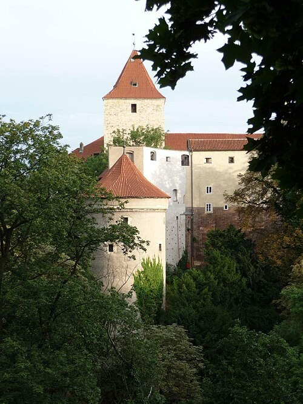

Daliborka torony (Daliborka)
A Daliborka tornyánál az Arany utcácska kedves színei után hirtelen komorabb környezetbe érkezünk. A kerek, vastag falú épület a vár északi erődítéseinek részeként született a tizenötödik század végén. Az ágyútornyok korában a védelem új formáit keresték. A torony alsó tereit ugyanakkor már korán foglyok elhelyezésére használták.
Névadója Dalibor z Kozojed cseh nemes volt. Az ő fogsága a Jagelló kor társadalmi és birtokvitáinak világába vezet. A történet mögött fellázadt jobbágyok, földesúri érdekek és királyi igazságszolgáltatás álltak. A torony neve így egyetlen ember sorsán keresztül őriz egy bonyolultabb történelmi konfliktust.
A legismertebb legenda szerint Dalibor a börtönben tanult meg hegedülni. Zenéjével annyira megindította az embereket, hogy azok élelmet és segítséget hoztak neki. A megható történetnek a város mesélő hagyománya adott maradandó formát. Biztos történeti tényként azonban nem állíthatjuk, hogy a fogoly valóban ilyen módon vált volna muzsikussá.
Dalibor alakja a cseh zenében is tovább élt. Bedřich Smetana operája a rab lovag történetét romantikus művészi formában dolgozta fel. Ettől a torony nemcsak börtöntörténeti emlék, hanem egy ismert kulturális történet helyszíne is lett. Az épületnél állva különösen jól érzékelhető, hogyan kapcsolódik össze a történeti múlt és a későbbi képzelet.
Ha a belső terek látogathatók, nézzük meg a szintek és nyílások kapcsolatát. A vastag falak között a fény és a mozgás lehetősége erősen korlátozott. A börtön történetét nem csupán tárgyakból, hanem magából a térből is megérthetjük. Az Arany utcácska lakóházai után itt egészen más jelentése lesz az alacsony ajtónak és a szűk helyiségnek.
Kívülről figyeljük meg a torony elhelyezkedését a vár peremén. Egyszerre kellett a külvilág felé védelmet, befelé pedig őrzött zártságot biztosítania. A romantikus hegedűszó legendája ezt a kemény építészeti környezetet ellenpontozza. Továbbindulva érdemes emlékezni arra, hogy a vár történetéhez az ünnepi udvarok mellett a fogság és a kiszolgáltatottság terei is hozzátartoznak.
50.092361, 14.405000